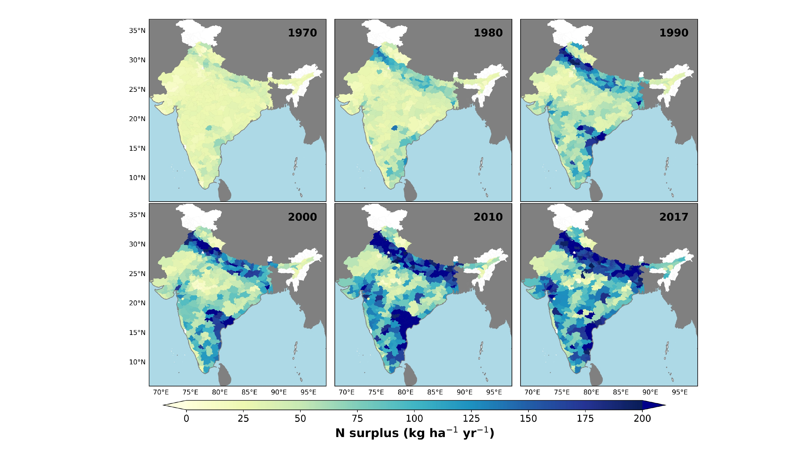
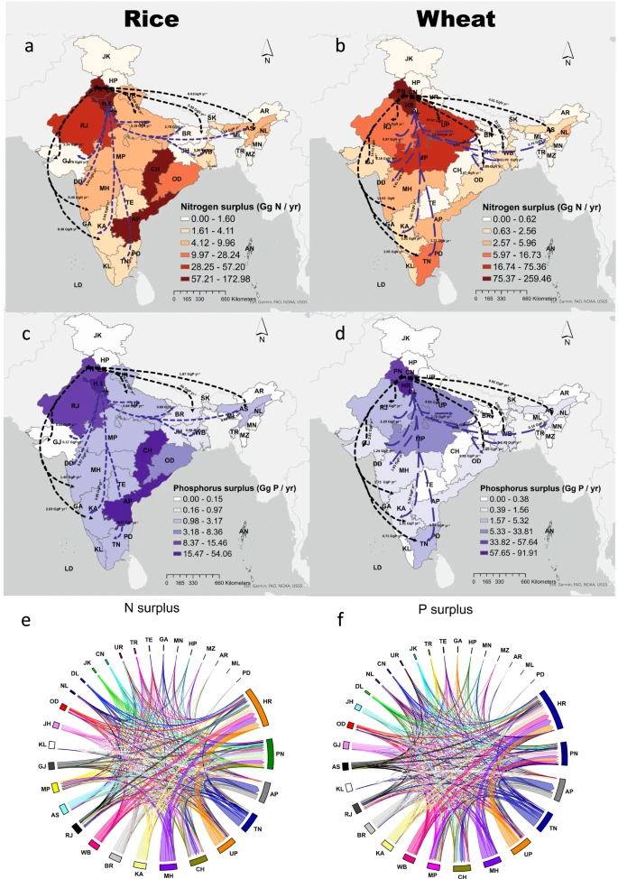
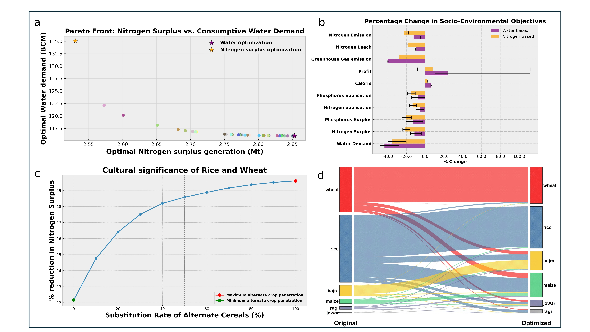
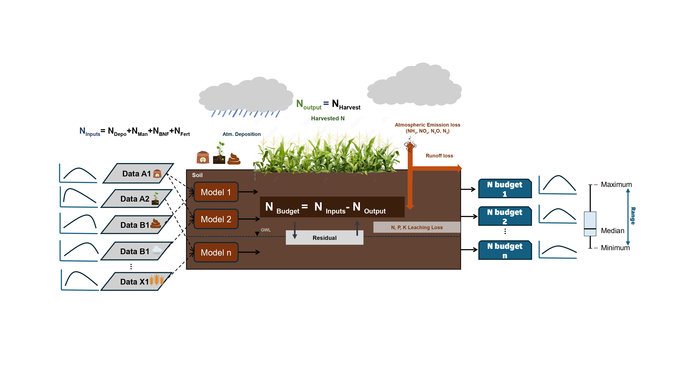
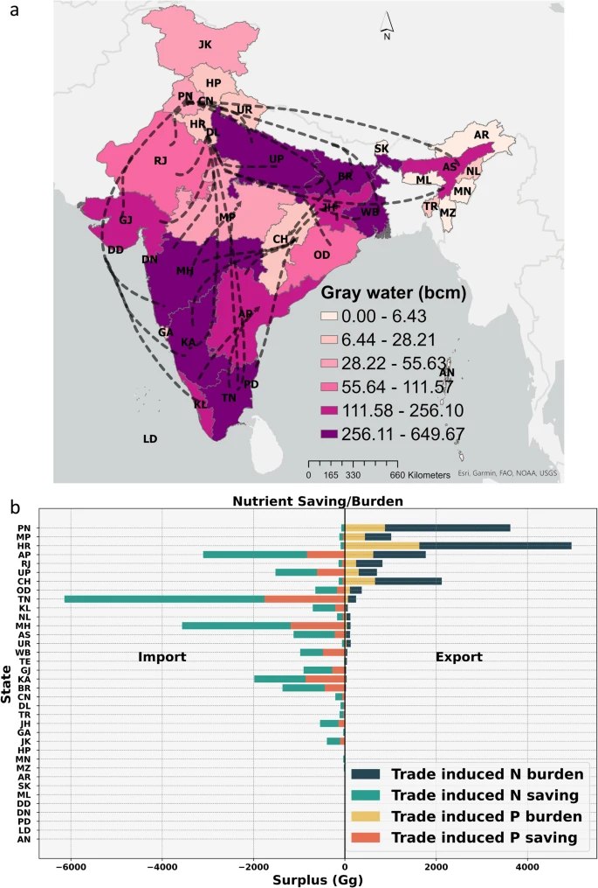
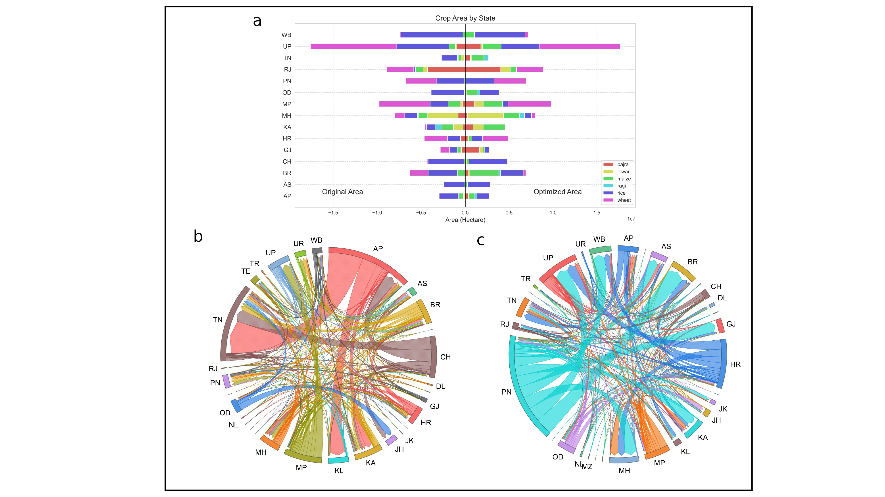

01
Nutrient pollution & management
Agricultural nitrogen and phosphorus pollution, nutrient budgets, nitrogen-use efficiency, surplus indicators and environmental thresholds.
Research Scientist · Helmholtz Centre for Environmental Research – UFZ
Leipzig, Germany
I develop spatial and network-based models to quantify how agriculture, food trade and water-resource use redistribute nutrient pollution and sustainability risks across regions.
Research fingerprint
The recurring themes connecting my research on agricultural sustainability, environmental risk and water systems.
Core research areas
Agricultural nitrogen and phosphorus pollution, nutrient budgets, nitrogen-use efficiency, surplus indicators and environmental thresholds.
Crop-trade networks, environmental footprints, food-system sustainability and planetary-boundary-relevant assessment.
Water-quality modelling, blue-water stress, stream-temperature dynamics, hydrological forecasting and climate adaptation.
Remote-sensing-informed datasets, spatial models, reproducible workflows and environmental sustainability benchmarks for AI evaluation.
Selected research output
Research network
An interactive view based on co-authored publications and manuscripts, conference work, and active research-team relationships listed in my current academic CV.
Click a node to see the relationship and shared research area. Publication collaborators and team/mentoring links are deliberately shown with different edge styles.
Visual research
Selected figures retained from the original website. Click any figure to inspect it at full size.






Funded leadership
Helmholtz-funded project developing AI-ready environmental sustainability benchmarking datasets from Helmholtz data assets.
Co-supervision of a PhD project on multi-pollutant, spatially explicit water-quality modelling from historical evolution to future scenarios.
Co-supervision of a PhD project developing multi-pollutant, spatially explicit water-quality information across the Nile basin.
Data & tools
Explore annual district patterns and click individual districts to inspect nitrogen-surplus trajectories from 1966 to 2017.
Supporting CSV and GeoJSON files from the original website remain available for transparent reuse and exploration.
Long-term environmental nitrogen management indicators across Europe, developed with collaborators at UFZ and Wageningen.
Activities & engagement
Outstanding Student and PhD Candidate Presentation Award.
Convener at EGU 2025 and 2026 on infrastructure resilience, interdependent risks and extreme-weather impacts on networked systems.
Reviewer for Nature Sustainability, Scientific Reports, Earth’s Future, and Communications Earth & Environment.